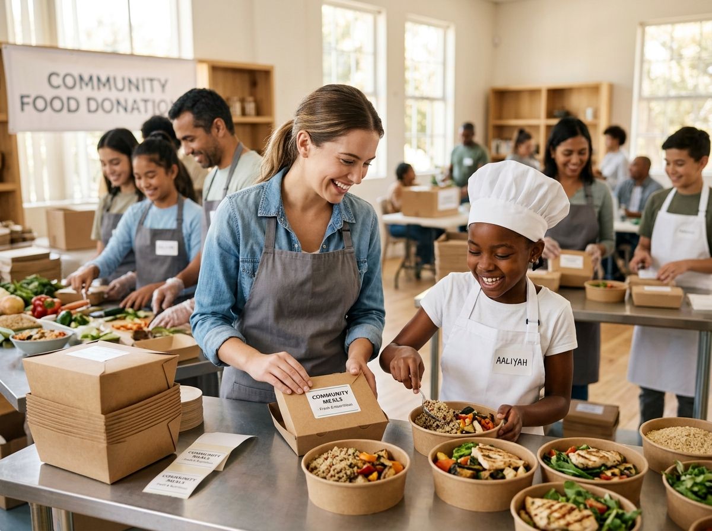

Zero Food Waste Mission
Delivering fresh, nutritious meals daily
Collective Impact
Turning kitchen surplus into hope and nourishment
Every evening, clean, untouched food from kitchens and banquets is left over. FoodBridge bridges the gap with community shelters within minutes before quality deteriorates.
Rapid 30-Min Dispatch
Automated proximity alerts notify active volunteers nearby immediately.
Verified Organizations
Only certified restaurants and registered shelters participate in handovers.